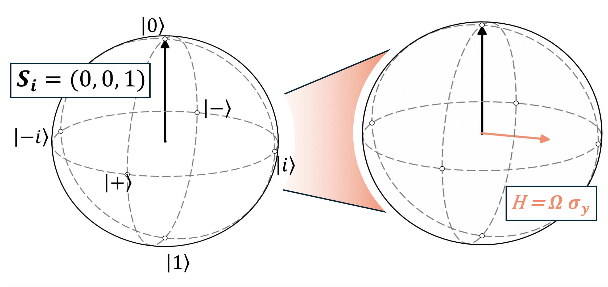

Research article
Tutorial: Interpreting Spin Dynamics in Dynamical Decoupling Schemes
Charlie J. Patrickson1, 2, *, Isaac R. Bailey2, Antonio E. Orazzo2, Luca Dellantonio2, Isaac J. Luxmoore1
1Department of Engineering, University of Exeter, EX4 4QF, UK
2Department of Physics, University of Exeter, EX4 4QF, UK
*Permanent email:
Abstract
Introduction

Holder
Reference HolderFigure 4
Author Contributions
Acknowledgments
$\Omega
Open-source software
As always, our work here depends critically on the open-source software community. Among our crucial dependencies: